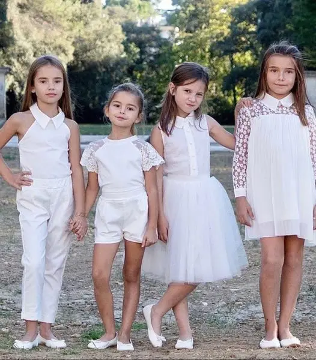
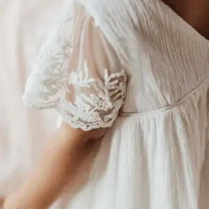
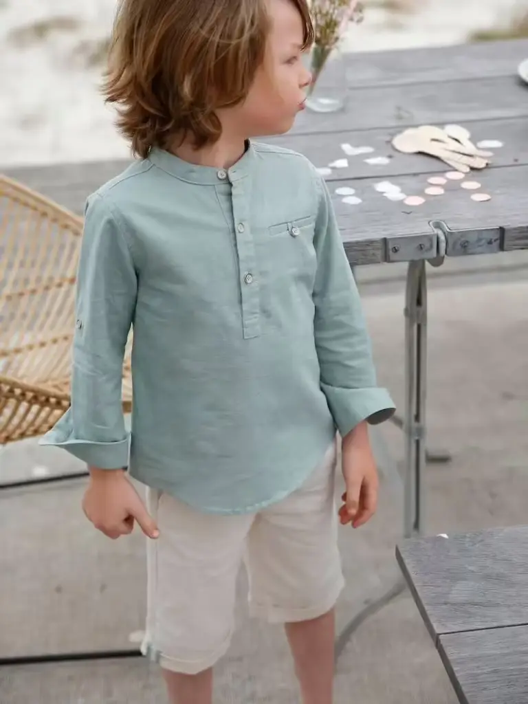
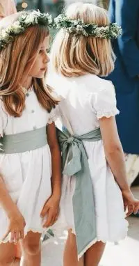
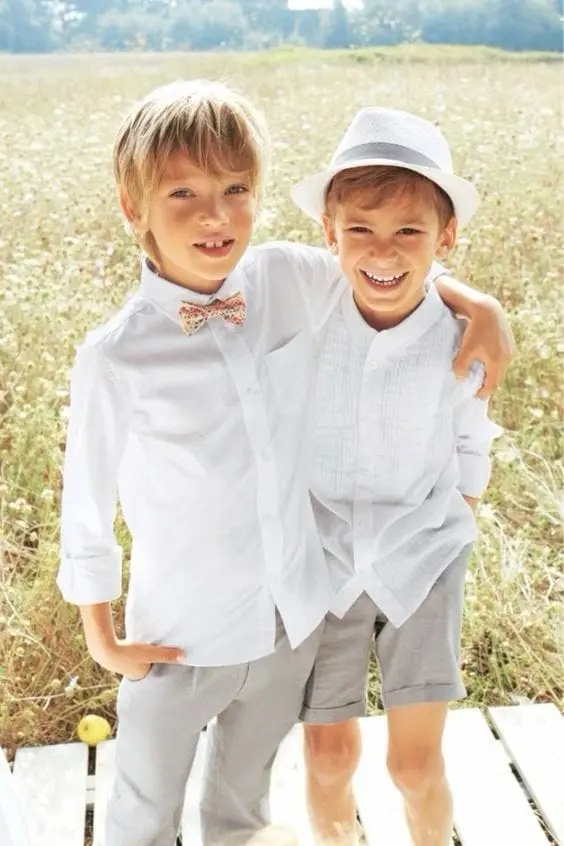

Organising a wedding means handling many aspects, including choosing outfits for the flower girls and page boys. They often play a central role in the ceremony. The group of children, made up of young members of your family or close friends' children, accompanies the couple at the entrance and exit of the church and carries the bride's train.
Their appearance should therefore reflect the importance of the occasion. Between elegance, comfort and harmony with the wedding theme, it can be tricky to take all these factors into account when choosing their outfits in Bordeaux. In this article, I give you 7 essential tips for choosing dazzling outfits so that your flower girls and page boys are both elegant and comfortable on the big day.

Outfits for girls according to the theme
Here are a few essential outfit ideas for flower girls according to your wedding theme:
Is your theme bohemian? Go for flowing dresses, floral prints or fringed dresses with hair accessories such as butterfly clips or little ribbons…
For a country wedding, midi dresses in cotton or lace in soft colours (sage green, cream) will be perfect. For accessories, a flower crown and sandals will complete the look nicely.
Is your wedding theme vintage? Then choose dresses in the style of the 1920s to 1960s, with fitted waists and flared skirts, and accessorise with gloves or rhinestone headbands, for example.
Is the theme of your Bordeaux wedding glamorous and elegant? Long dresses in metallic colours or refined fabrics (velvet, satin) will be dazzling!
Have you chosen a winter theme? I recommend long dresses with long sleeves or a coat. The best colours for a winter theme are cool tones (midnight blue, silver grey).
For a more classic wedding, I recommend a white dress falling two or three centimetres below the knee.
To complete the outfits, you can also accessorise with brooches, bow ties, jewellery, satin belts, ballet flats… These elegant details add a touch of sophistication. What do you think?
And the good news is that accessories are often inexpensive!
Outfits for boys according to the theme
Here are a few essential outfit ideas for page boys according to your wedding theme:
For a bohemian wedding, why not choose light, airy outfits for the little page boys? A linen or cotton grandad-collar shirt would be a good option, while loose trousers would complete the outfit and ensure comfort and freedom of movement. As for colours, neutral shades such as off-white, beige or light blue go perfectly with a bohemian atmosphere.
For a country ceremony, wouldn't a white shirt and blue trousers be perfect, a simple but effective combination? And why not add a waistcoat to lift the style without looking too formal? Finally, what about a bow tie? It is the perfect accessory to turn a little boy into a true, elegant gentleman!
Having a vintage wedding in Bordeaux? A vintage wedding calls for old-fashioned outfits, doesn't it? For page boys, high-waisted trousers with a fitted waistcoat and a long-sleeved shirt will suit your vintage theme perfectly. And how about a pair of leather shoes, such as derbies, for an even more elegant look? Why not add a beret or a flat cap for an extra touch of style? Finally, tones such as grey, navy blue or beige will bring that retro, timeless touch!
For a winter wedding, you have several options:
You could choose a polo shirt under a shirt, with straight trousers. If your little boy gets too hot, he can easily take off the polo while staying elegant in the shirt. Or how about pairing a wool jumper with matching wool trousers and pretty leather boots for a look that is both cosy and refined? Or what about a wool cardigan with a white shirt and corduroy trousers? You could also opt for a warm coat for extra comfort.
Is your wedding traditional? The page boys could wear miniature suits, just like the adults' – what do you think? An outfit made up of a black (navy or dark grey) jacket, a white shirt, straight-cut suit trousers and a tie or bow tie will look elegant, simple and comfortable. And for shoes, which to choose? Loafers or Velcro shoes? These two essential styles will help avoid trips, and the child will be free to run and play with friends.
Which colours for the children's outfits?
To create visual harmony between the children's outfits and those of the bridesmaids and groomsmen, you can play with colours and shades for a dazzling effect.
Are the bridesmaids wearing pastel dresses (powder pink, sky blue, pale green)? Then the children's outfits could be in matching tones: the boys in light blue suits and the girls in off-white or pale pink dresses.
If the groomsmen opt for dark suits, such as navy blue or charcoal grey, you can choose lighter colours for the children, but still within the same palette. For example, grey trousers and a navy jumper for the boys, and a light blue or ivory dress for the girls. Sound good?




Are you considering bright or metallic colours, such as gold or burgundy, for your wedding? Add subtle touches to the children's outfits to keep them elegant! Accessories such as bow ties or hair slides in these shades would be dazzling. Do you prefer discreet touches or a stronger contrast?
For more originality, rather than choosing perfectly identical clothes, consider varying the outfits.
Girls and boys can wear the same outfits in different colours, or, conversely, the same colours in different cuts.
The key is to create cohesion between the children's outfits and those of the bridesmaids and groomsmen, for a lovely result in the photos.
What do your children think?
Involving children in choosing their clothes is an excellent way to boost their enthusiasm and their pride in being flower girls and page boys.
Ask them about their favourite colours or styles.
It will make them feel respected and valued, while ensuring they are comfortable in their clothes.
To involve the flower girls, let them choose a small bouquet to carry during the ceremony. This can be an excellent way to make them part of this special day.


Who chooses the outfits?
You have two options:
You haven't budgeted for the children's outfits?
In that case, give the parents some guidelines without imposing specific brands or outfits, although it is best for the accessories to be at least somewhat coordinated. For example, you might specify: a white outfit with a wide sash in the colour of your choice. Let the parents know about three or four months before the wedding so they can find a suitable outfit calmly and happily, without any pressure.
On the other hand, have you set aside a budget for the wedding party? Then you will choose the outfits and pay for them yourselves.
Have you thought about comfort?
Children love to move, play and run around, don't they? So won't uncomfortable outfits risk spoiling their fun and making the parents' job harder?
Favour natural materials such as cotton, linen or light blends.
They regulate body temperature well and are perfect for long wedding days.
As for cut, the most comfortable are loose dresses and adjustable trousers.
Have you thought about spare outfits? In case of stains or accidents, a small extra outfit in the parents' bag can be very handy.
For the day after, also plan a more relaxed outfit, such as a loose cotton gauze dress for the girls and a nice casual set for the boys.


How old are your children? The essential question!


Is your child's age a key factor in choosing the ideal outfit?
The answer is yes. Indeed, before the age of 5, little girls generally love flower crowns and short, floaty skirts. Who doesn't love feeling like a little wedding fairy? Is your little girl four? Then closed shoes such as ballet flats will be perfect!
As for little boys, the essential outfit that is often a big hit is a white shirt with Bermuda shorts. This combination blends simplicity and elegance while ensuring optimal comfort for young children who want to move and play all day.
However, have you noticed that as children grow, their style changes? From the age of 5, girls prefer structured dresses and long skirts, with more elegant details such as lace or shiny fabrics. There are mini heels of one or two centimetres that can complete their more elaborate outfits.
But wait… For boys, too, things get more complicated! Their tastes start to take shape and they want to look a little more elegant! Does your boy want to dress like the grown-ups? You can choose full suits, or trousers with more fitted shirts, paired with a bow tie or a tie, for example.


My view
As a wedding planner, I want to stress that choosing outfits for flower girls and page boys is quite an art! You have to respect the theme, ensure their comfort... and avoid "I don't want to wear that!" meltdowns on the day. Why not give them a little freedom in choosing their accessories? Believe me, it can make all the difference in motivating them! Don't forget: dresses or suits that are too tight are every child's nightmare! Do you like cotton or linen? With these materials, I can guarantee they will be freer and more comfortable during the crazy day that awaits them! Share your ideas with me, and together we'll make these little ones absolutely irresistible in your photos!
Alexandra Ambert
In short…
With simple, good-quality outfits in the spirit of your wedding, and by letting them choose at least some elements of their outfits, your young guests will become unmissable on the big day. They will bring a dazzling, charming touch to your ceremony, and they will also feel more enthusiastic and involved throughout this fabulous day!
By keeping both the practical and aesthetic aspects in mind, you will make sure your flower girls and page boys feel good while staying elegant!